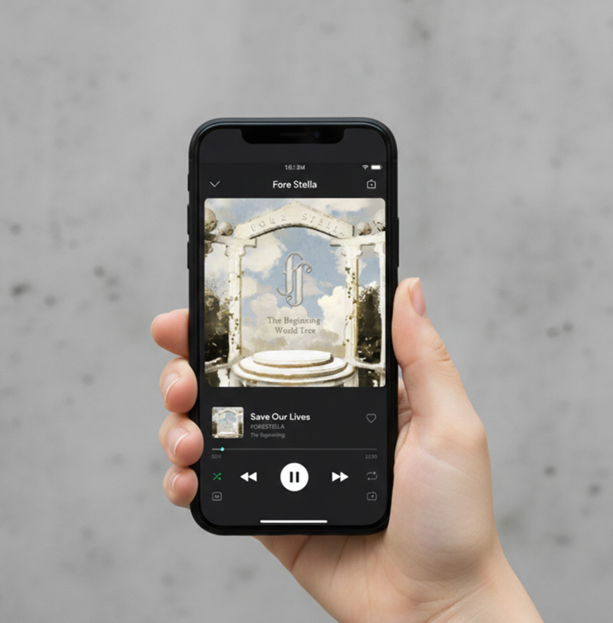
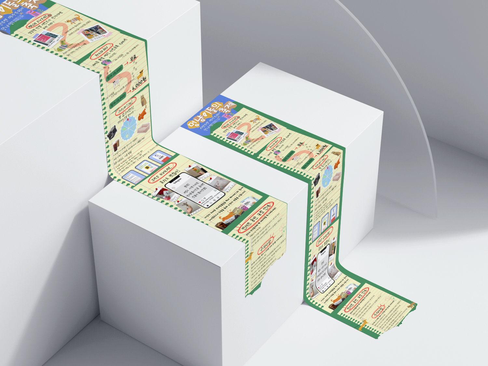
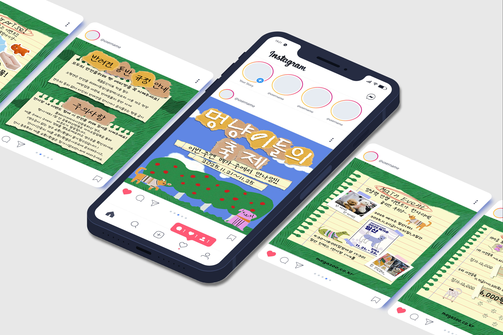

SUB - 양지은 포트폴리오
공공 교육기관의 웹사이트는 많은 정보를 담고 있지만, 사용자가 필요한 정보에 도달하기까지 다소 복잡한 과정을 거쳐야 하는 경우가 많다고 느꼈습니다. 본 리디자인 프로젝트는 이러한 불편함에서 출발하여, 정보를 더 많이 보여주기보다는 보다 명확하고 효과적으로 전달하는 방법에 집중하였습니다. 사용자가 길을 잃지 않고 자연스럽게 흐름을 따라갈 수 있도록 정보 구조를 정리하고, 화면 내에서 정보의 우선순위가 분명히 드러나도록 시각적 위계를 재설계하였습니다.
Lending Page >
Quick Links >

본 앨범 리디자인 프로젝트는 음악이 지닌 서정성과 세계관을 시각적으로 확장하는 데에 초점을 맞추었습니다. 단순히 기존 이미지를 재구성하는 데 그치지 않고, 앨범이 가진 이야기와 감정의 흐름이 자연스럽게 이어지도록 전체 구조와 디자인 언어를 재정의하였습니다. 클래식한 아치 구조와 수채화 질감, 절제된 컬러 팔레트를 중심으로 시각적 분위기를 구성하여, 음악이 가진 여운과 신화적인 이미지를 시각적으로 경험할 수 있도록 설계하였습니다. 이를 통해 청자가 앨범을 하나의 세계로 인식하고, 감정의 흐름에 몰입할 수 있는 패키지 경험을 제안하고자 하였습니다.
Lending Page >

이벤트 정보를 단순히 나열하는 방식에서 벗어나, 사용자가 자연스럽게 흐름을 따라가며 내용을 이해하고 참여할 수 있도록 전체 구조를 설계하는 데 중점을 두었습니다. 스크랩북을 모티프로 한 친근한 비주얼을 활용하되, 정보의 우선순위가 명확하게 드러나도록 시각적 위계를 조정하여 핵심 메시지가 효과적으로 전달되도록 구성하였습니다. 각 단계가 하나의 이야기처럼 이어지도록 설계하여, 사용자가 페이지를 따라 내려가며 이벤트의 전체 맥락을 쉽게 파악할 수 있도록 하였습니다. 이를 통해 단순한 홍보 페이지가 아닌, 이벤트 경험 자체를 전달하는 디자인을 목표로 하였습니다.
Lending Page >

축제의 즐거움을 전달하고자 '디지털 스크랩북' 테마를 기반으로 시각 요소를 설계하였습니다. 손글씨 서체와 메모지 오브제를 레이어링하여 사용자가 친근하게 정보를 수용하도록 유도하였으며, 슬라이드 형식에 맞춰 장마다 명확한 정보 구획을 설정하였습니다. 특히 배경색과 대비되는 포인트 컬러를 활용해 가독성을 높이고, 일러스트와 사진을 조화롭게 배치하여 시각적 몰입감을 더했습니다. 이를 통해 사용자가 마지막까지 흥미를 유지하며 자연스럽게 참여로 이어지도록 최적화된 정보 동선을 설계하였습니다.
Lending Page >
전통 자개 공예의 미학을 현대적인 디자인 언어로 재해석하여 브랜드 'KSUMI'만의 독창적인 세계관을 구축하는 데 초점을 맞추었습니다. 시대를 초월한 불변의 아름다움을 시각화하기 위해 정교한 기하학적 심볼과 절제된 블랙 & 골드 컬러 팔레트를 사용하였으며, 나전칠기의 섬세한 질감을 그래픽 요소로 활용해 고급스러운 분위기를 연출했습니다. 로고부터 패키지, 디지털 액세서리에 이르는 일관된 브랜딩을 통해 사용자가 브랜드의 장인정신과 현대적 감각을 동시에 경험할 수 있도록 설계하였습니다.
Lending Page >
사용자의 취향을 정교하게 분석하여 최적의 콘텐츠를 제안하는 '개인화 큐레이션' 서비스에 최적화되도록 설계되었습니다. 파스텔 톤의 컬러 팔레트와 라운드 서체를 결합해 시각적 편안함을 전달하며, 메인 화면부터 지도 서비스까지 일관된 디자인 시스템을 적용해 조작의 직관성을 높였습니다. 특히 복잡한 정보를 그리드와 카드 레이아웃으로 구조화하여 탐색의 피로도를 낮추고, 사용자가 자신에게 필요한 가치를 빠르게 발견할 수 있는 사용자 중심의 모바일 환경을 구현하는 데 집중하였습니다.
Lending Page >
Prototype >